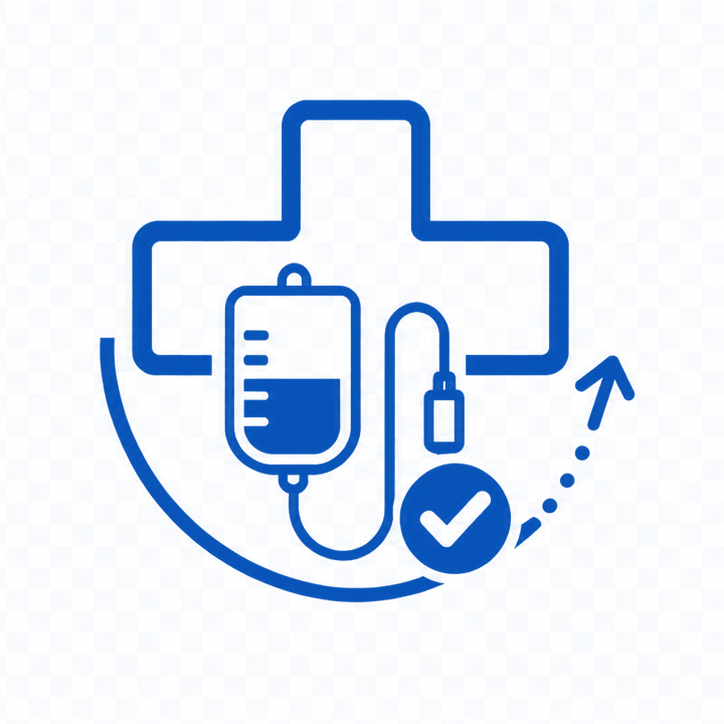

Version Windows 10 64 bits, ouverte dans une fenêtre dédiée Microsoft Edge. Les catalogues et bibliothèques intégrés permettent de travailler hors connexion. L’accès à un dossier réseau nécessite sa disponibilité.
Renseignez votre nom dans Rempli par, en haut de l'écran. Il figurera sur la commande. Sans lui, l'impression est refusée.
Avec la douchette — scannez l'étiquette du casier : l'article s'affiche seul, le curseur se place dans la case quantité. Tapez le nombre d'unités en stock, appuyez sur Entrée, puis scannez le suivant.
scan → chiffre → Entrée → scan
Inutile de toucher l'écran, ni de cliquer où que ce soit au préalable.
USB ou Bluetooth — le même cycle est utilisé. L'application accepte comme fin de scan Entrée, Entrée du pavé numérique, Tabulation et les doubles fins de ligne USB ; le curseur reste sur la quantité à renseigner.
Les douchettes USB et Bluetooth restent utilisables. Le scan par caméra est désactivé dans cette édition Windows.
À la main — tapez un nom ou une référence dans la recherche, puis saisissez la quantité au clavier ou avec les boutons − et +.
Molette et pavé tactile — leur défilement ne modifie jamais une quantité. Si une case numérique est active, elle est automatiquement désélectionnée avant le défilement de la page.
| Checker le stock | Stock pas encore vérifié. Comptez le stock puis renseignez la quantité disponible. |
| Stock OK | Compté, stock suffisant : rien à commander. |
| Commander 5 | Compté, il manque 5 unités. |
| Absence de dotation | Pas de dotation définie : indiquez la quantité voulue, ou laissez vide. |
| Aucune commande | Article sans dotation, pour lequel vous avez mis 0. |
Un article non compté ne commande rien. Si vous sautez un article, il n'apparaîtra pas sur la commande.
Ils apparaissent en rouge. Certains disposent d'un seuil réglé par l'administrateur : tant que le stock reste au-dessus, rien n'est commandé ; dès qu'il descend au seuil, la dotation entière est commandée d'un coup. Comptez normalement, vous n'avez rien de particulier à faire.
La barre d'avancement indique les articles comptés et le nombre à commander. Lorsqu'ils sont renseignés, les menus zones et types filtrent la liste. Les articles sont regroupés par zone de rangement, dans l'ordre du parcours du service.
Le bouton à droite de la recherche fait défiler trois vues. Son libellé indique la vue affichée, et il se colore dès qu'un tri est actif :
| Tous les articles | Vue de départ : la liste complète. |
| Reste à vérifier | Seuls les articles non encore comptés — pratique pour finir un inventaire. |
| À commander | Seuls les articles à commander — pour relire la commande avant de l'imprimer. |
Un scan reste prioritaire : l'article recherché s'affiche même s'il ne fait pas partie de la vue en cours.
🖶 Imprimer — le document ne reprend que les articles à commander, triés par type. Les articles Hors Stock sortent sur une feuille séparée.
Une copie PDF datée est conservée dans le sous-dossier Archives du module sous C:\commandes avant l'impression : une panne d'imprimante ne fait pas perdre la commande.
Une fois la fenêtre d'impression refermée, les compteurs sont remis à zéro et le champ « Rempli par » est vidé : le cycle est clos, la liste repart vierge. Un message vous le confirme, et l'avertissement figure aussi dans la fenêtre de confirmation.
Le comptage est conservé automatiquement. À la réouverture, un bandeau propose Continuer ou Repartir de zéro. Pour un arrêt long ou un changement d’appareil, utilisez Enregistrer la commande puis Charger la commande dans le mode administrateur ; JSON est proposé par défaut, avec CSV et XLSX au choix. Le bouton ↺ Réinitialiser efface tous les comptages pour un nouveau cycle.
| « Code non lu » | Rapprochez-vous, évitez les reflets, recommencez. |
| « Référence inconnue » | L'étiquette ne correspond à aucun article : elle est peut-être périmée. Signalez-la à l'administrateur. |
| Le scan tape des symboles | Vérifiez la concordance entre le clavier de la douchette et celui de Windows ; testez une référence connue. |
| Rien ne se passe au scan | Vérifiez qu'un suffixe Entrée ou Tabulation est activé sur la douchette, puis testez une référence connue en USB et en Bluetooth. |
Le bandeau rouge efface l'article précédent : c'est volontaire, pour éviter de saisir une quantité sur le mauvais article.
Le scan écrit des symboles ? Vérifiez que le clavier de la douchette correspond à la disposition de clavier Windows. Utilisez la notice du modèle et contrôlez une référence connue avant de reprendre le comptage.
Icône ⚙, puis mot de passe. Chaque article dispose d'un bouton de modification et d'un bouton de suppression ; + Ajouter un article crée une fiche.
Lire un code-barres — sélectionnez le champ Référence code-barres / scan dans la fiche, puis utilisez la douchette Windows. Contrôlez le code lu ; aucun préfixe ne doit être ajouté.
| Référence QR / commande | Identifiant pharmacie, précédé de « sol » uniquement dans la base. Le préfixe est retiré sur la commande imprimée. |
| Référence code-barres / scan | Code de l'article lu pendant le comptage et imprimé en Code 128 sur les étiquettes. Il est relié à la référence de commande du même article et reste sans préfixe. |
| Dénomination | Nom utilisé pendant le comptage et sur les étiquettes. |
| Nom Pharmacie | Nom repris sur la commande envoyée à la pharmacie. |
| Localisation | Zone de rangement : détermine l'ordre de parcours. |
| Type | Détermine le tri à l'impression. Saisir « Hors Stock » bascule l'article en rouge et sur la feuille séparée. |
| Dotation | Stock cible. À 0, l'article passe en saisie libre. |
| Seuil | Facultatif, sur tout article (voir ci-dessous). |
| Quantité à commander | Facultatif. Impose la quantité commandée dès le seuil atteint, sans calcul. |
Applicable à n'importe quel article, pourvu qu'il ait une dotation. Le seuil sert de déclencheur : tant que le stock reste au-dessus, rien n'est commandé. Au seuil ou en dessous, la quantité dépend du type d'article :
| Quantité à commander renseignée | Cette quantité, telle quelle. Le stock et la dotation n'entrent pas dans le calcul ; la dotation ne sert plus que d'indication. |
| Sinon, articles courants | Le complément pour revenir à la dotation, soit dotation moins stock. |
| Sinon, articles Hors Stock | La dotation entière, quel que soit le stock restant. |
Seuil vide : pas de déclencheur, la commande part dès qu'il manque quelque chose. La quantité imposée n'agit qu'avec un seuil : saisie seule, elle reste sans effet, et l'application vous le signale.
Article courant, dotation 4, seuil 2 : à 3 en stock, rien ; à 2 en stock, commande de 2 ; à 1 en stock, commande de 3.
Article Hors Stock, dotation 5, seuil 1 : à 2 en stock, rien ; à 1 en stock, commande de 5.
Avec une quantité imposée de 12 et un seuil de 2 : à 3 en stock, rien ; à 2 comme à 0 en stock, commande de 12. Utile pour un article livré par lot.
La personne qui compte ne voit rien de ce réglage : sa pastille affiche simplement « Stock OK » ou « Commander X ». Ni le seuil ni la quantité imposée n'apparaissent ailleurs qu'ici et dans la liste des articles, en rouge à côté de la dotation.
Chaque ajout ou correction est enregistré automatiquement sur cet appareil et reste disponible après la fermeture de la page. Pour disposer d'une sauvegarde indépendante ou transférer le catalogue vers un autre poste, utilisez ⇩ Exporter la base de donnée au format JSON (proposé par défaut), CSV ou XLSX.
Exporter l’application mise à jour produit une copie HTML du catalogue courant. Ce fichier ne met pas à jour le programme Windows installé. Pour mettre à jour le programme, utilisez l’installateur fourni ; pour transférer le catalogue, privilégiez une sauvegarde JSON.
Les fichiers sont enregistrés dans C:\commandes, puis Pharmacie, Solutés ou Magasin selon le module. Application contient le catalogue et les exports HTML ; Sauvegardes contient les commandes enregistrées ; Etiquettes contient les planches d’étiquettes ; Archives contient les PDF de commande et anciennes versions remplacées. Aucun choix de dossier n’est nécessaire.
Bouton 🏷️ Editer les Etiquettes code-barres : choisissez Standard 27 étiquettes (3 colonnes × 9 lignes) ou Avery plastifié (modèle Avery L7060, 21 étiquettes de 63,5 × 38,1 mm, 3 colonnes × 7 lignes). Le Code 128 contient la référence code-barres sans préfixe ; la référence de commande associée reste indiquée en petit. Le classement reste effectué par zone, pour coller casier par casier.
Le bouton ouvre d'abord une liste à cocher : n'imprimez que les étiquettes voulues — une nouvelle référence, une étiquette abîmée, une dotation modifiée — au lieu de réimprimer inutilement tout le catalogue. Le compteur annonce le nombre de pages. Après avoir choisi le format, utilisez Enregistrer le PDF ou Imprimer directement ; contrôlez le papier et conservez une échelle de 100 %.
Trois raccourcis : Tout cocher, Tout décocher, et Cocher la sélection affichée — ce dernier coche d'un coup tout ce que laissent voir la recherche et le filtre de zone, par exemple l'ensemble d'un chariot. La sélection se conserve quand vous changez de filtre, et jusqu'à la fermeture de la page.
Avant de lancer toutes les planches, imprimez la première sur feuille ordinaire et superposez-la à une planche vierge à contre-jour : les imprimantes ont souvent un décalage de 1 à 2 mm.
⇩ Exporter la base de donnée propose JSON (par défaut), CSV UTF-8 séparé par des points-virgules, ou XLSX. ⇪ Importer la base de donnée restaure le catalogue du même module en conservant les comptages en cours ; les références avec des zéros initiaux restent du texte. Le catalogue importé est enregistré automatiquement sur l'appareil. Préférez JSON pour une sauvegarde complète et portable.
Les codes ci-dessous se scannent directement sur cet écran, le lecteur en main. Inutile de ressortir le manuel papier.
C'est la seule manipulation à connaître. Prenez la douchette, scannez les vignettes de 1 à 9, une par une, sans en sauter. Un bip confirme chaque étape. Rien ne s'écrit à l'écran : ces codes s'adressent au lecteur, pas à l'application.
Les étapes 7, 8 et 9 vont ensemble : elles programment le préfixe et doivent être scannées à la suite, dans cet ordre. Si vous êtes interrompu, reprenez à l'étape 7.
À quoi sert ce préfixe ? Sans lui, une référence scannée alors que le curseur se trouve dans une case quantité venait s'ajouter au nombre déjà saisi. L'Entrée envoyée avant la référence referme d'abord la case, puis la référence arrive dans la recherche. Vous pouvez ainsi scanner sans jamais surveiller où se trouve le curseur.
Sur Windows, utilisez le clavier ou les boutons − et + pour saisir les quantités.
15700 produit &5700.En USB filaire, rien à scanner : le câble suffit.
| Le scan écrit des symboles | Le clavier ne correspond pas à l'appareil : voir « Selon l'appareil » ci-dessus. |
| Rien ne se passe | Refaites la séquence des 9 codes : le suffixe Entrée manque probablement. |
| Les QR ne passent plus | La lecture 2D a été désactivée : refaites la séquence (étape 2). |
| La quantité se mélange à la référence | Le préfixe manque : refaites les étapes 7, 8 et 9. |
| Des caractères manquent | Scannez « Transmission lente ». |
| Plus rien ne fonctionne | Scannez « Réglages d'usine », puis reprenez la séquence complète. |
Sur Windows, utilisez le clavier ou les boutons − et + pour saisir les quantités.
Le mot de passe n'est pas écrit dans le fichier : seule une empreinte y figure, pour qu'il reste illisible même en ouvrant l'application dans un éditeur de texte. Le changer demande donc de recalculer cette empreinte — l'outil ci-dessous s'en charge.
Six caractères minimum.
Le changement de mot de passe prend effet pour la session. Exporter l’appli inscrit ce changement dans une copie HTML ; cet export ne modifie pas l’application installée. Pour rendre la modification permanente dans la version installée, demandez une mise à jour au responsable de l’application. Ne confondez pas ce mot de passe avec une protection des fichiers ou un chiffrement.
Cette protection écarte les curieux, elle ne résiste pas à quelqu'un sachant lire le code du fichier. Ne vous en servez pas pour protéger des données confidentielles.
Exportez la base avant une grosse séance de modification : JSON est recommandé, CSV et XLSX facilitent les échanges avec d’autres logiciels. Gardez une copie locale sur un poste, pour travailler si le réseau tombe. Après tout changement de dotation ou de référence, réimprimez les étiquettes concernées.
Ouvrez le mode administrateur et authentifiez-vous pour utiliser Charger la commande et Enregistrer la commande : ils servent à reprendre ou sauvegarder le comptage. Exporter la base de donnée et Importer la base de donnée concernent le catalogue. Choisissez le bon module et privilégiez JSON pour une sauvegarde complète. Dans la fenêtre des étiquettes, sélectionnez les articles et le format, puis utilisez Imprimer directement ou enregistrez la planche PDF. Les formats proposés comprennent Standard 27 étiquettes et Avery plastifié (L7060, 21 étiquettes, 63,5 × 38,1 mm). Imprimez sur A4 à 100 %, sans ajustement à la page.
Lancez l’application depuis son raccourci Windows. Elle s’ouvre dans une fenêtre Windows maximisée avec la barre des tâches accessible. La croix Windows permet de fermer la fenêtre. Il n’y a plus de bouton Quitter au menu ni de bascule plein écran ; la barre des tâches reste accessible. Les boutons de scan par caméra ont été retirés. Les douchettes USB et Bluetooth restent utilisables. Microsoft Edge est nécessaire. Edition de Secours ouvre le dernier PDF dans une fenêtre Edge dédiée et demande sa mise au premier plan. Autorisez les fenêtres si Edge les bloque, puis imprimez depuis son lecteur PDF. Un ancien PDF non conservé dans le stockage local peut encore être ouvert par Windows. Contrôlez le nom de l’imprimante et la commande avant de lancer une nouvelle impression.
Pour mettre à jour, fermez l’application et lancez l’installateur fourni par le service. Sauvegardez d’abord vos catalogues et commandes. Les données restent dans le profil local de cette édition ; elles ne sont pas automatiquement partagées entre plusieurs postes. La suppression du profil efface les données locales et le dernier PDF de secours.
Le bouton soleil / croissant de lune à côté de la date change l’affichage. Le choix est mémorisé sur cet appareil et partagé entre les modules. Les impressions restent sur fond blanc.
Ce bouton ouvre le dernier PDF de commande de ce module dans une fenêtre dédiée et demande sa mise au premier plan. Imprimez ensuite depuis le lecteur PDF Edge. La copie est enregistrée sur cet appareil avant le lancement de l’impression, même sans dossier de destination. Elle survit à la fermeture et à la remise à zéro du comptage. La prochaine commande la remplace ; la suppression des données de l’application l’efface. Cette action ne valide pas de nouvelle commande et ne modifie pas le comptage. Les commandes antérieures à cette mise à jour ne sont pas récupérées automatiquement.
Le bouton Liste papier ouvre une liste vierge en A4 portrait, sans colonne Réglages catalogue. Choisissez la zone, puis imprimez ou enregistrez en PDF. Remplissez Stock compté, À commander et Visa à la main. Rééditez les listes après toute modification du catalogue.
Cette application est un outil de comptage et de préparation des commandes. Elle ne fournit aucune recommandation de prescription, de posologie ou de prise en charge. Les quantités proposées doivent être contrôlées par le professionnel responsable selon les procédures du service avant transmission.
Le fonctionnement dépend du poste, du catalogue et des périphériques. Faites valider leur utilisation avant mise en service et signalez toute anomalie au responsable de l’application.
Conception, développement et rédaction : Gabriel THOMAS. Aide Windows 2.6.2 mise à jour en octobre 2026.